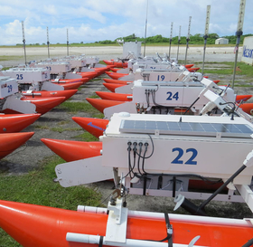

Current Research
ROS 2 Autonomy Stack for Multi-Agent Systems | 2025 – present
AutonomyNM | Sandia National Laboratories
- Developing a ROS 2-based autonomy stack using SLAM Toolbox, Navigation2, and ROS 2 Control
- Leading verification testing and debugging for multi-agent systems in warehouse environments
Maximizing Robot Traversal Under Actuator Failure | 2025 – present
CMR | Brigham Young University
- Developing algorithms to maximize the workspace of multiply-redundant truss robots under actuator failure
- Simulating failure scenarios to validate robustness and ensure continued locomotion in both simulation and hardware
Multi-Agent Navigation in GPS-Denied Environments | 2024 – present
MAGICC Lab | Brigham Young University
- Investigating factor graph optimization and EKF-based controllers for multi-agent navigation
- Simulating and validating system performance using OpenVINS, ROS 2, and empirical flight data
Past Research

Inflatable Structures for the Moon | 2023 – 2025
CMR | Brigham Young University
- Established research operations for a new lab, coordinating undergraduate-led development during the first year
- Led redesign of a soft, inflatable octahedral robot for lunar deployment, incorporating novel parent-child radio networking with error-checking protocols
- Selected as one of six national finalists in the 2024–2025 NASA BIG Idea Challenge on soft robotics for lunar exploration

Remote Control of Rafts for Nuclear Diagnostics | 2024
LIDSS | Lawrence Livermore National Laboratories
- Engineered STM32-based remote control system for commanding a fleet of test rafts in nuclear diagnostics applications (LIDSS)
- Delivered end-to-end mechanical, electrical, and software systems, programming FreeRTOS and managing task scheduling
World's Smallest Nerf Gun | 2023 – 2024
Mark Rober & CMR | Brigham Young University
- Collaborated with Mark Rober to develop the world’s smallest Nerf gun across five scales (72M+ views)
- Conducted 100+ design tests to analyze failure modes and drive mechanical optimization through weekly technical reporting
Advancing 3D Printed Microfluidics | 2023 – 2024
TEMP Lab | Brigham Young University
- Investigated quantum dots as a method for measuring temperature within microfluidic devices
- Calibrated fluorescence output of quantum dots to correlate with temperature in an in-house “lab-on-a-chip” device